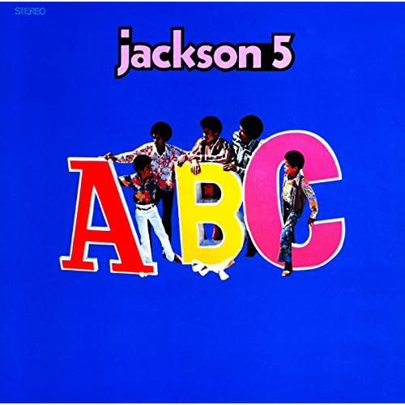

O Rei do Pop
Considerado o “rei da música pop”, Michael Jackson foi um dos artistas americanos de maior sucesso na história da música popular mundial
nascido na pequena cidade de gary indiana nos EUA foi o sétimo filho de uma familia simples, Michael teve 5 irmãos e 3 irmãs além de seus pais que moravam em uma pequena casa com dois quartos.
Diana Ross Presents The Jackson 5 é o álbum de estreia do grupo musical estadunidense The Jackson 5, lançado pelo selo Motown em dezembro de 1969
ABC é o segundo álbum de estúdio dos The Jackson 5, lançado em Maio de 1970 pela Motown Records. Contém os singles "ABC" e "The Love You Save", tendo ambos conquistado o topo das paradas.
O álbum foi aclamado por fãs e pela mídia especializada, e é considerado por muitos "o maior e melhor álbum da história". Consequentemente, venceu um recorde de oito Grammy Awards em 1984, incluindo o de Album of the Year.
Um recorde de nove canções foram lançadas como compacto durante a divulgação de Bad. Cinco delas chegaram à primeira posição nos Estados Unidos: "I Just Can't Stop Loving You", "Bad", "The Way You Make Me Feel", "Man in the Mirror" e "Dirty Diana".